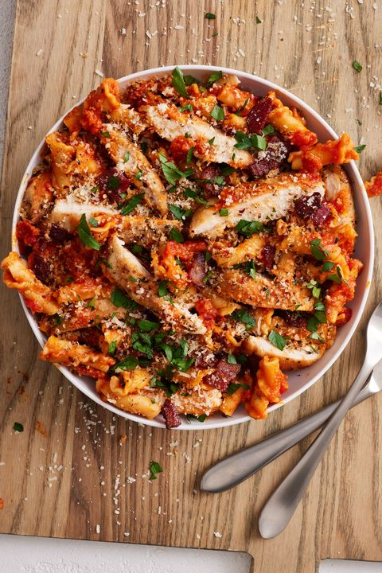

Pasta

Description
This is a classic pasta recipe that is simple and delicious. It's perfect for a quick weeknight dinner.
Ingredients
- 8 ounces pasta
- 2 tablespoons olive oil
- 2 cloves garlic, minced
Steps
- Step 1: Cook the pasta according to package instructions. Drain and set aside.
- Step 2: In a skillet, heat olive oil over medium heat. Add minced garlic and cook until fragrant.
- Step 3: Add cooked pasta to the skillet and toss to coat with the garlic-infused oil.